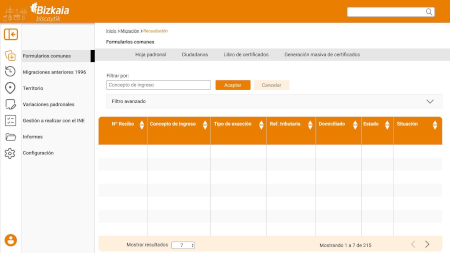
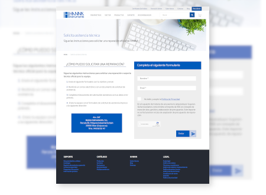
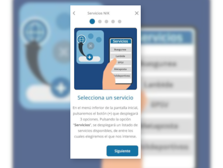
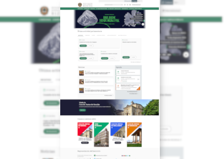
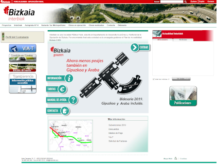
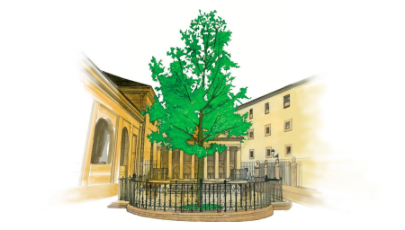
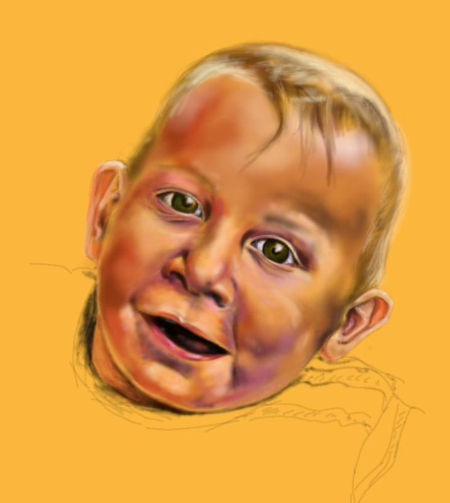
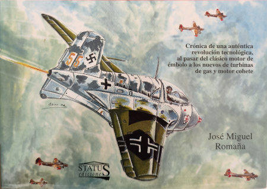
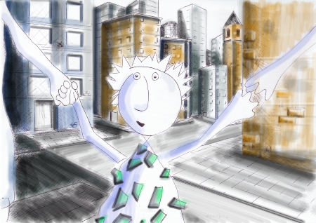
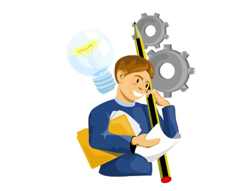

Asier Egaña Aretxabaleta
Diseñador UX/UI | Maquetador Front-End | Especialista en Accesibilidad Web
Diseñador UX/UI y Maquetador Front-End con más de 20 años de experiencia acumulada en la conceptualización, diseño y desarrollo de productos digitales. Especializado en entornos Liferay y experto en Accesibilidad Web (WCAG, Norma UNE-EN 301549). Perfil técnico-creativo con sólida base visual (Bellas Artes), capaz de asegurar la mejor experiencia de usuario garantizando el cumplimiento estricto de los estándares técnicos y de inclusión digital.
Experiencia
Diseñador UX/UI y Maquetador Front-End (Liferay DXP 7.4)
SOLUZIO ONA | Mayo 2022 – Actualidad
- Diseño y Maquetación: Conceptualización visual y maquetación responsive para proyectos institucionales (Diputación Foral de Bizkaia, Interbiak, Juntas Generales de Bizkaia, Intranet Biscaytik, Eusko Jaurlaritza).
- Mantenimiento y Evolutivos: Gestión de maquetación avanzada en plataformas de producción críticas de diferentes apartados de la web institucional Bizkaia.eus. como por ejemplo: El observatorio de violencia Machista, El Archivo Foral o las Web de Kirolur, Las Juntas Generales de bizkaia.
- Accesibilidad: Supervisión y validación de los estándares WCAG 2.1, para los desarrollos correspondientes al cliente LANTIK (BFA-DFB.)
- Tecnologías utilizadas: HTML5, CSS3, SCSS, jQuery, Liferay 7.4, Bootstrap, Figma, Adobe XD, Photoshop, Illustrator, Acrobat Pro., Handbrake, ...
Diseñador UX/UI y Maquetador Front-End
Eurohelp Consulting (Amatech group) | 2004 – Mayo 2022
- Proyectos LANTIK: Diseño, prototipado y maquetación Front-End de múltiples portales públicos y servicios ciudadanos (Bizkaia.eus, gazteak.bizkaia.eus, Web Udalekuak, Enkarterri Museoa).
- Responsable de Accesibilidad: Responsable de la validación técnica, corrección y adecuación a los criterios de accesibilidad web para los proyectos de Lantik, garantizando el cumplimiento normativo vigente.
- Tecnologías utilizadas: HTML5, CSS3, SCSS, jQuery, Entornos liferay DXP (7.1 y 7.2), Bootstrap, Adobe Suite (Photoshop, Illustrator, XD, Flash), Handbrake.
Diseñador y Maquetador
MEGASOFT - DOMINION Año 2001 – Año 2002
- Proyectos Clientes: Diseño, prototipado y maquetación.
- Tecnologías utilizadas: HTML5, CSS, JS (Dreamweaver)
Portfolio

Biscaytik
Prototipo en alta definición para Gestión de padrón
datu(a)
Prototipos en alta definición para elementos tipo card de Servicios

Hanna Instruments
Prototipos para diferentes landing en alta definición.

NIK Cartera digital
Mockups y visuals en alta definición.

Juntas Generales de Bizkaia
Diseño y maquetación responsive

Interbiak
Diseño y maquetación responsive

Bizkaia de toda la vida
Adaptación y restauración de imágenes para formato Desktop.

Estudio
Creación de ilustraciones mediante diferentes técnicas digitales.

Aviones a reacción de la segunda guerra mundial
Ilustraciones realizadas con técnicas manuales para los libros: "Aviones a reacción del III Reich" y "Aviones a turborreacción y con motor cohete", del historiador José Miguel Romaña.

Apnabi
Ilustraciones digitales para una guía informativa sobre el trabajo que realiza APNABI.

Visuals
Ilustraciones vectoriales conceptuales, para uso multimedia.